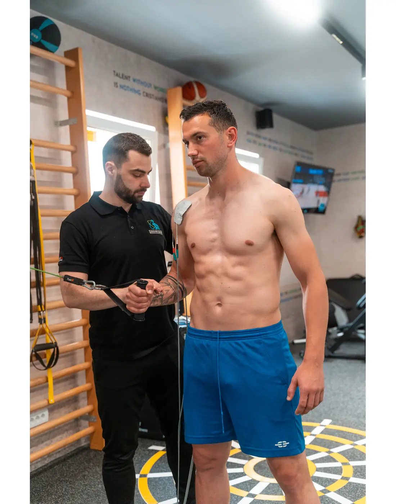

ACL · PREDNJI UKRŠTENI LIGAMENT
Naslov iz copyja
Podnaslov iz copyja — jedna do dve rečenice. COPY STIŽE
VIDEO U PRIPREMI
Novakov video (VSL). Ovde ide plejer kad video stigne.
Za koga je
Uvodna rečenica iz copyja. COPY STIŽE
- Stavka 1Kratko objašnjenje iz copyja.
- Stavka 2Kratko objašnjenje iz copyja.
- Stavka 3Kratko objašnjenje iz copyja.
- Stavka 4Kratko objašnjenje iz copyja.
Naslov sekcije o fazama COPY STIŽE

Faza 1 — naziv iz copyja
Opis faze iz copyja.
Faza 2 — naziv iz copyja
Opis faze iz copyja.
Faza 3 — naziv iz copyja
Opis faze iz copyja.
Faza 4 — naziv iz copyja
Opis faze iz copyja.
■ KO VODI OPORAVAK
Tekst o Novaku i Strahinji iz copyja — njihova verzija, ne prerađena. COPY STIŽE
Cena
Koja stavka iz cenovnika važi za ACL (pregled, REHAB paket…) — iz copyja ili od Novaka. ZA POTVRDU
Česta pitanja
Pitanje 1 iz copyja
Odgovor iz copyja.
Pitanje 2 iz copyja
Odgovor iz copyja.
Pitanje 3 iz copyja
Odgovor iz copyja.
Završni poziv iz copyja
Zakažite pregled
011 / 40 95 924
Pon–Pet 08:00–20:00 · Subota 09:00–15:00